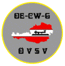

OE-CW-Group, Austrian Club for CW enthusiasts.
First Austrian Telegraphy Interest Group, would like to introduce itself
Morse telegraphy is the oldest and most traditional form of long distance communication but regrettably the era of CW has come to an end in the field of commercial as well as naval radio services.
If thousands of radio amateurs all over the world still make use of their key, it is not due to nostalgic enthusiasm alone but because telegraphy, as is universally acknowledged, enables global communication by use of simple means even under unfavourable conditions.
To provide a homestead for all radio amateurs who are willing to make use of their key at least once in a while or - even better - to give preference to telegraphic communication in general, there are 2 groups in Austria
a specific section for telegraphy within the Radio Society of Austria ÖVSV, and
the OE-CW-Group.
The section for telegraphy within the ÖVSV is a technical section, has no specific members but represents all telegraphers of all members of the society.
The OE-CW-Group is open for all interested persons from Austria as well as abroad whose objectives are to promote the improvement of telegraphy techniques and encourage the use of CW thereby attempting to establish contacts and create friendship between radio amateurs all over the world.
To all who want to join our club, the simple application procedure is as follows:
Please send informal application for membership in the OE-CW-G
To encourage the use of CW on the bands add copies of 20 QSL cards confirming contacts in telegraphy or an appropriate GCR list
One valid contact (QSO) on one of the QTCs
To cover printing and mailing costs please add 10 (membership is lifelong, no further charges are collected)
Contact: OE6FYG, Herbert Lafer, Speltenbach 55, A-8280 Fürstenfeld, oe6fyg (at- symbol) gmx . at
Monthly QTC in German: Every 1st SUNDAY of a calendar month on 3575 kHz at 08:00 local Vienna time.
Secretary of the OE-CW-Group: OE3LHB, Heinz Lorenz, Hiessbergergasse 13, A-3002 Purkersdorf, oe3lhb (at-symbol) oevsv . at